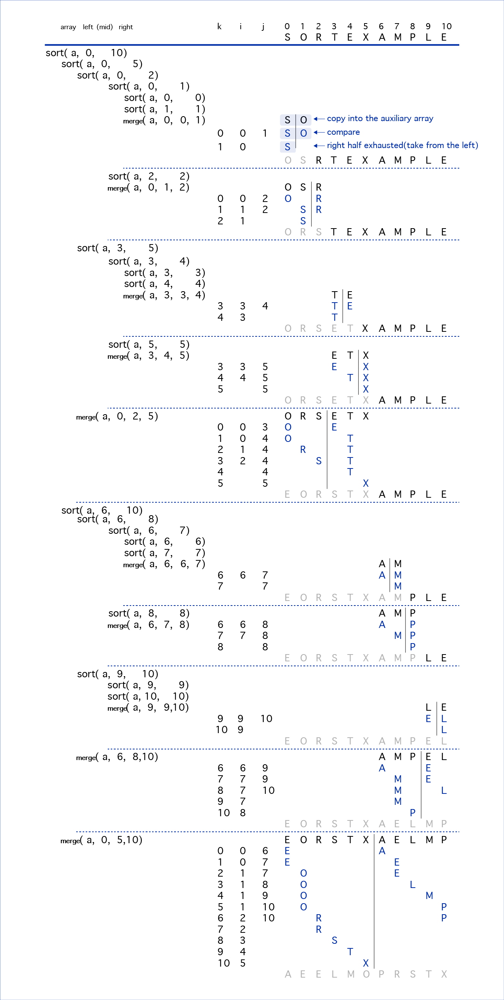

<!DOCTYPE html>
<html>
<head><meta name="generator" content="Hexo 3.9.0">
  <!-- hexo-inject:begin --><!-- hexo-inject:end --><meta charset="utf-8">
  

  
  <title>内排序 | </title>
  <meta name="viewport" content="width=device-width, initial-scale=1, maximum-scale=1">
  <meta name="description" content="（内容比较多，还没写完，配图也没画完 主要介绍内排序，分为比较排序算法，包括插入排序、希尔排序、选择排序、堆排序、冒泡排序、快速排序、归并排序；非比较排序算法，包括分配排序、静态基数排序、链式排序等等。看了&amp;lt;Algorithms 4th&amp;gt;里的例子，所以在比较排序这一部分，我也会用一个简单的数组“SORTEXAMPLE”为例，分别讨论这个数组在每种排序算法中具体每一步的比较次数和移动次数">
<meta property="og:type" content="article">
<meta property="og:title" content="内排序">
<meta property="og:url" content="http://xiaomeizhuang.github.io/2019/10/06/内排序/index.html">
<meta property="og:site_name">
<meta property="og:description" content="（内容比较多，还没写完，配图也没画完 主要介绍内排序，分为比较排序算法，包括插入排序、希尔排序、选择排序、堆排序、冒泡排序、快速排序、归并排序；非比较排序算法，包括分配排序、静态基数排序、链式排序等等。看了&amp;lt;Algorithms 4th&amp;gt;里的例子，所以在比较排序这一部分，我也会用一个简单的数组“SORTEXAMPLE”为例，分别讨论这个数组在每种排序算法中具体每一步的比较次数和移动次数">
<meta property="og:locale" content="en">
<meta property="og:image" content="http://xiaomeizhuang.github.io/2019/10/06/内排序/insertionsort.png">
<meta property="og:image" content="http://xiaomeizhuang.github.io/2019/10/06/内排序/shellsort.png">
<meta property="og:image" content="http://xiaomeizhuang.github.io/2019/10/06/内排序/selectionsort.png">
<meta property="og:image" content="http://xiaomeizhuang.github.io/2019/10/06/内排序/mergesort1.png">
<meta property="og:updated_time" content="2019-11-04T04:58:22.746Z">
<meta name="twitter:card" content="summary">
<meta name="twitter:title" content="内排序">
<meta name="twitter:description" content="（内容比较多，还没写完，配图也没画完 主要介绍内排序，分为比较排序算法，包括插入排序、希尔排序、选择排序、堆排序、冒泡排序、快速排序、归并排序；非比较排序算法，包括分配排序、静态基数排序、链式排序等等。看了&amp;lt;Algorithms 4th&amp;gt;里的例子，所以在比较排序这一部分，我也会用一个简单的数组“SORTEXAMPLE”为例，分别讨论这个数组在每种排序算法中具体每一步的比较次数和移动次数">
<meta name="twitter:image" content="http://xiaomeizhuang.github.io/2019/10/06/内排序/insertionsort.png">
  
  
    <link rel="icon" href="/favicon.png">
  
  
    <link href="//fonts.googleapis.com/css?family=Source+Code+Pro" rel="stylesheet" type="text/css">
  
  <link rel="stylesheet" href="/css/style.css"><!-- hexo-inject:begin --><!-- hexo-inject:end -->
</head>
</html>
<body>
  <!-- hexo-inject:begin --><!-- hexo-inject:end --><div id="container">
    <div id="wrap">
      <header id="header">
  <div id="banner"></div>
  <div id="header-outer" class="outer">
    <div id="header-title" class="inner">
      <h1 id="logo-wrap">
        <a href="/" id="logo"></a>
      </h1>
      
    </div>
    <div id="header-inner" class="inner">
      <nav id="main-nav">
        <a id="main-nav-toggle" class="nav-icon"></a>
        
          <a class="main-nav-link" href="/">Home</a>
        
          <a class="main-nav-link" href="https://github.com/xiaomeizhuang">Github</a>
        
          <a class="main-nav-link" href="/About">About</a>
        
      </nav>
      <nav id="sub-nav">
        
        <a id="nav-search-btn" class="nav-icon" title="Search"></a>
      </nav>
      <div id="search-form-wrap">
        <form action="//google.com/search" method="get" accept-charset="UTF-8" class="search-form"><input type="search" name="q" class="search-form-input" placeholder="Search"><button type="submit" class="search-form-submit">&#xF002;</button><input type="hidden" name="sitesearch" value="http://xiaomeizhuang.github.io"></form>
      </div>
    </div>
  </div>
</header>
      <div class="outer">
        <section id="main"><article id="post-内排序" class="article article-type-post" itemscope itemprop="blogPost">
  <div class="article-meta">
    <a href="/2019/10/06/内排序/" class="article-date">
  <time datetime="2019-10-06T07:30:50.000Z" itemprop="datePublished">2019-10-06</time>
</a>
    
  </div>
  <div class="article-inner">
    
    
      <header class="article-header">
        
  
    <h1 class="article-title" itemprop="name">
      内排序
    </h1>
  

      </header>
    
    <div class="article-entry" itemprop="articleBody">
      
      <!-- Table of Contents -->
      
        <div id="toc" class="toc-article">
          <strong class="toc-title">目录</strong>
          <ol class="toc"><li class="toc-item toc-level-1"><a class="toc-link" href="#比较排序算法"><span class="toc-number">1.</span> <span class="toc-text">比较排序算法</span></a><ol class="toc-child"><li class="toc-item toc-level-2"><a class="toc-link" href="#插入排序insertion-sort"><span class="toc-number">1.1.</span> <span class="toc-text">插入排序(Insertion Sort)</span></a><ol class="toc-child"><li class="toc-item toc-level-3"><a class="toc-link" href="#工作原理"><span class="toc-number">1.1.1.</span> <span class="toc-text">工作原理</span></a></li><li class="toc-item toc-level-3"><a class="toc-link" href="#算法描述"><span class="toc-number">1.1.2.</span> <span class="toc-text">算法描述</span></a></li><li class="toc-item toc-level-3"><a class="toc-link" href="#代码示例"><span class="toc-number">1.1.3.</span> <span class="toc-text">代码示例</span></a></li><li class="toc-item toc-level-3"><a class="toc-link" href="#图示"><span class="toc-number">1.1.4.</span> <span class="toc-text">图示</span></a></li><li class="toc-item toc-level-3"><a class="toc-link" href="#算法复杂度"><span class="toc-number">1.1.5.</span> <span class="toc-text">算法复杂度</span></a><ol class="toc-child"><li class="toc-item toc-level-4"><a class="toc-link" href="#空间复杂度"><span class="toc-number">1.1.5.1.</span> <span class="toc-text">空间复杂度</span></a></li><li class="toc-item toc-level-4"><a class="toc-link" href="#时间复杂度"><span class="toc-number">1.1.5.2.</span> <span class="toc-text">时间复杂度</span></a></li></ol></li></ol></li><li class="toc-item toc-level-2"><a class="toc-link" href="#希尔排序shell-sort"><span class="toc-number">1.2.</span> <span class="toc-text">希尔排序(Shell Sort)</span></a><ol class="toc-child"><li class="toc-item toc-level-3"><a class="toc-link" href="#工作原理-1"><span class="toc-number">1.2.1.</span> <span class="toc-text">工作原理</span></a></li><li class="toc-item toc-level-3"><a class="toc-link" href="#算法描述-1"><span class="toc-number">1.2.2.</span> <span class="toc-text">算法描述</span></a></li><li class="toc-item toc-level-3"><a class="toc-link" href="#代码示例-1"><span class="toc-number">1.2.3.</span> <span class="toc-text">代码示例</span></a></li><li class="toc-item toc-level-3"><a class="toc-link" href="#图示-1"><span class="toc-number">1.2.4.</span> <span class="toc-text">图示</span></a></li><li class="toc-item toc-level-3"><a class="toc-link" href="#算法复杂度-1"><span class="toc-number">1.2.5.</span> <span class="toc-text">算法复杂度</span></a><ol class="toc-child"><li class="toc-item toc-level-4"><a class="toc-link" href="#空间复杂度-1"><span class="toc-number">1.2.5.1.</span> <span class="toc-text">空间复杂度</span></a></li><li class="toc-item toc-level-4"><a class="toc-link" href="#时间复杂度-1"><span class="toc-number">1.2.5.2.</span> <span class="toc-text">时间复杂度</span></a></li></ol></li><li class="toc-item toc-level-3"><a class="toc-link" href="#步长序列gap-sequence"><span class="toc-number">1.2.6.</span> <span class="toc-text">步长序列(Gap Sequence)</span></a></li></ol></li><li class="toc-item toc-level-2"><a class="toc-link" href="#选择排序selection-sort"><span class="toc-number">1.3.</span> <span class="toc-text">选择排序(Selection Sort)</span></a><ol class="toc-child"><li class="toc-item toc-level-3"><a class="toc-link" href="#工作原理-2"><span class="toc-number">1.3.1.</span> <span class="toc-text">工作原理</span></a></li><li class="toc-item toc-level-3"><a class="toc-link" href="#算法描述-2"><span class="toc-number">1.3.2.</span> <span class="toc-text">算法描述</span></a></li><li class="toc-item toc-level-3"><a class="toc-link" href="#算法复杂度-2"><span class="toc-number">1.3.3.</span> <span class="toc-text">算法复杂度</span></a><ol class="toc-child"><li class="toc-item toc-level-4"><a class="toc-link" href="#空间复杂度-2"><span class="toc-number">1.3.3.1.</span> <span class="toc-text">空间复杂度</span></a></li><li class="toc-item toc-level-4"><a class="toc-link" href="#时间复杂度-2"><span class="toc-number">1.3.3.2.</span> <span class="toc-text">时间复杂度</span></a></li></ol></li><li class="toc-item toc-level-3"><a class="toc-link" href="#算法代码"><span class="toc-number">1.3.4.</span> <span class="toc-text">算法代码</span></a></li><li class="toc-item toc-level-3"><a class="toc-link" href="#图示-2"><span class="toc-number">1.3.5.</span> <span class="toc-text">图示</span></a></li></ol></li><li class="toc-item toc-level-2"><a class="toc-link" href="#堆排序heap-sort"><span class="toc-number">1.4.</span> <span class="toc-text">堆排序(Heap Sort)</span></a></li><li class="toc-item toc-level-2"><a class="toc-link" href="#冒泡排序bubble-sort"><span class="toc-number">1.5.</span> <span class="toc-text">冒泡排序(Bubble Sort)</span></a><ol class="toc-child"><li class="toc-item toc-level-3"><a class="toc-link" href="#工作原理-3"><span class="toc-number">1.5.1.</span> <span class="toc-text">工作原理</span></a></li><li class="toc-item toc-level-3"><a class="toc-link" href="#稳定性"><span class="toc-number">1.5.2.</span> <span class="toc-text">稳定性</span></a></li><li class="toc-item toc-level-3"><a class="toc-link" href="#算法描述-3"><span class="toc-number">1.5.3.</span> <span class="toc-text">算法描述</span></a></li><li class="toc-item toc-level-3"><a class="toc-link" href="#代码示例-2"><span class="toc-number">1.5.4.</span> <span class="toc-text">代码示例</span></a></li></ol></li><li class="toc-item toc-level-2"><a class="toc-link" href="#快速排序quick-sort"><span class="toc-number">1.6.</span> <span class="toc-text">快速排序(Quick Sort)</span></a><ol class="toc-child"><li class="toc-item toc-level-3"><a class="toc-link" href="#算法原理"><span class="toc-number">1.6.1.</span> <span class="toc-text">算法原理</span></a></li><li class="toc-item toc-level-3"><a class="toc-link" href="#算法描述-4"><span class="toc-number">1.6.2.</span> <span class="toc-text">算法描述</span></a></li><li class="toc-item toc-level-3"><a class="toc-link" href="#算法复杂度-3"><span class="toc-number">1.6.3.</span> <span class="toc-text">算法复杂度</span></a></li><li class="toc-item toc-level-3"><a class="toc-link" href="#代码示例-3"><span class="toc-number">1.6.4.</span> <span class="toc-text">代码示例</span></a></li></ol></li><li class="toc-item toc-level-2"><a class="toc-link" href="#归并排序merge-sort"><span class="toc-number">1.7.</span> <span class="toc-text">归并排序(Merge Sort)</span></a><ol class="toc-child"><li class="toc-item toc-level-3"><a class="toc-link" href="#工作原理-4"><span class="toc-number">1.7.1.</span> <span class="toc-text">工作原理</span></a></li><li class="toc-item toc-level-3"><a class="toc-link" href="#算法描述-5"><span class="toc-number">1.7.2.</span> <span class="toc-text">算法描述</span></a></li><li class="toc-item toc-level-3"><a class="toc-link" href="#算法复杂度-4"><span class="toc-number">1.7.3.</span> <span class="toc-text">算法复杂度</span></a></li><li class="toc-item toc-level-3"><a class="toc-link" href="#代码示例-4"><span class="toc-number">1.7.4.</span> <span class="toc-text">代码示例</span></a></li><li class="toc-item toc-level-3"><a class="toc-link" href="#图示-3"><span class="toc-number">1.7.5.</span> <span class="toc-text">图示</span></a></li></ol></li></ol></li><li class="toc-item toc-level-1"><a class="toc-link" href="#非比较排序算法"><span class="toc-number">2.</span> <span class="toc-text">非比较排序算法</span></a><ol class="toc-child"><li class="toc-item toc-level-2"><a class="toc-link" href="#分配排序"><span class="toc-number">2.1.</span> <span class="toc-text">分配排序</span></a></li><li class="toc-item toc-level-2"><a class="toc-link" href="#静态基数排序"><span class="toc-number">2.2.</span> <span class="toc-text">静态基数排序</span></a></li><li class="toc-item toc-level-2"><a class="toc-link" href="#链式技术排序"><span class="toc-number">2.3.</span> <span class="toc-text">链式技术排序</span></a></li><li class="toc-item toc-level-2"><a class="toc-link" href="#索引排序"><span class="toc-number">2.4.</span> <span class="toc-text">索引排序</span></a></li></ol></li></ol>
        </div>
      
        <p>（内容比较多，还没写完，配图也没画完</p>
<p>主要介绍内排序，分为比较排序算法，包括插入排序、希尔排序、选择排序、堆排序、冒泡排序、快速排序、归并排序；非比较排序算法，包括分配排序、静态基数排序、链式排序等等。看了&lt;Algorithms 4th&gt;里的例子，所以在比较排序这一部分，我也会用一个简单的数组“SORTEXAMPLE”为例，分别讨论这个数组在每种排序算法中具体每一步的比较次数和移动次数。</p>
<a id="more"></a>
<p><br></p>
<h1 id="比较排序算法">比较排序算法</h1>
<p><br></p>
<p>记得提前先补充完整几个概念：</p>
<p>原地算法<span class="math inline">\((in-place\;algorithm)​\)</span>：基本上不需要额外辅助的数据结构，但允许少量额外的辅助变量来转换数据。</p>
<p>稳定性 ：首先说明稳定性是指相同元素在排序后相对位置保持不变；作用：个人感觉稳定性的含义在于更广泛情形下，排序元素通常具有多个键值，即可以按照多个标准来排序。稳定性则保证了按照一个键排序的结果可以为第二个键所用。举个例子，对于学生的课程成绩，通常会和学号、姓名列在一起，先按照学生学号排序，然后再根据成绩从高到低，这样，相同分数的学生则是按照学号排名。</p>
<p>复杂度 ：时间复杂度和空间复杂度</p>
<p>每种排序算法要用到的代码：</p>
<figure class="highlight c++"><table><tr><td class="gutter"><pre><span class="line">1</span><br><span class="line">2</span><br><span class="line">3</span><br><span class="line">4</span><br><span class="line">5</span><br><span class="line">6</span><br><span class="line">7</span><br><span class="line">8</span><br><span class="line">9</span><br><span class="line">10</span><br><span class="line">11</span><br><span class="line">12</span><br><span class="line">13</span><br><span class="line">14</span><br><span class="line">15</span><br><span class="line">16</span><br><span class="line">17</span><br><span class="line">18</span><br><span class="line">19</span><br><span class="line">20</span><br><span class="line">21</span><br><span class="line">22</span><br><span class="line">23</span><br><span class="line">24</span><br><span class="line">25</span><br><span class="line">26</span><br><span class="line">27</span><br></pre></td><td class="code"><pre><span class="line"></span><br><span class="line"><span class="class"><span class="keyword">class</span> <span class="title">SortName</span>&#123;</span></span><br><span class="line">    <span class="keyword">public</span>:</span><br><span class="line">    <span class="keyword">template</span> &lt;<span class="class"><span class="keyword">class</span> <span class="title">Record</span>&gt;</span></span><br><span class="line"><span class="class">        <span class="title">void</span> <span class="title">sort</span>(<span class="title">Record</span> <span class="title">array</span>[], <span class="title">int</span> <span class="title">length</span>)&#123;</span></span><br><span class="line">        <span class="comment">//见各自不同排序算法的代码，</span></span><br><span class="line">    &#125;</span><br><span class="line">    </span><br><span class="line">    <span class="keyword">template</span> &lt;<span class="class"><span class="keyword">class</span> <span class="title">Record</span>&gt;</span></span><br><span class="line"><span class="class">        <span class="title">static</span> <span class="title">bool</span> <span class="title">less</span>(<span class="title">Record</span> <span class="title">a</span>, <span class="title">Record</span> <span class="title">b</span>)&#123;</span></span><br><span class="line">        <span class="keyword">return</span> a&lt;=b;</span><br><span class="line">    &#125;</span><br><span class="line">    </span><br><span class="line">    <span class="keyword">template</span> &lt;<span class="class"><span class="keyword">class</span> <span class="title">Record</span>&gt;</span></span><br><span class="line"><span class="class">        <span class="title">static</span> <span class="title">void</span> <span class="title">exch</span>(<span class="title">Record</span> <span class="title">array</span>[], <span class="title">int</span> <span class="title">index1</span>, <span class="title">int</span> <span class="title">index2</span>)&#123;</span></span><br><span class="line">        Record temp=<span class="built_in">array</span>[index1];</span><br><span class="line">        <span class="built_in">array</span>[index1]=<span class="built_in">array</span>[index2];</span><br><span class="line">        <span class="built_in">array</span>[index2]=temp;</span><br><span class="line">    &#125;</span><br><span class="line">    </span><br><span class="line">    <span class="keyword">template</span> &lt;<span class="class"><span class="keyword">class</span> <span class="title">Record</span>&gt;</span></span><br><span class="line"><span class="class">        <span class="title">static</span> <span class="title">bool</span> <span class="title">isSorted</span>(<span class="title">Record</span> <span class="title">array</span>[], <span class="title">int</span> <span class="title">length</span>)&#123;</span> </span><br><span class="line">        <span class="keyword">for</span>(<span class="keyword">int</span> i=<span class="number">0</span>; i&lt; length; ++i)&#123;</span><br><span class="line">            <span class="keyword">if</span>(less(<span class="built_in">array</span>[i], <span class="built_in">array</span>[i<span class="number">-1</span>]))</span><br><span class="line">                <span class="keyword">return</span> <span class="literal">false</span>;</span><br><span class="line">        &#125;</span><br><span class="line">&#125;</span><br></pre></td></tr></table></figure>
<p><br></p>
<p><br></p>
<h2 id="插入排序insertion-sort">插入排序(Insertion Sort)</h2>
<p><br></p>
<h3 id="工作原理">工作原理</h3>
<p>通过构建有序序列，对于未排序的数据，在已经排序序列里从后向前扫描，找到符合顺序的位置并插入。</p>
<h3 id="算法描述">算法描述</h3>
<p>以“SORTEXAMPLE”这个序列为例：</p>
<p>1.从第一个元素S开始，S被认为已经排序</p>
<p>2.从S之后的未排序序列中取出第一个元素O，在已排序的序列中从后向前扫描</p>
<p>3.扫描过程中，O与已排序序列中的元素依次比较大小，当发现O&lt;S时，便交换位置</p>
<p>4.重复3.，直到O找到符合大小顺序的位置为止，否则不用交换</p>
<p>5.继续从未排序的序列中取出下一个元素R，重复2.3.4.步骤，直到所有元素排序完为止</p>
<h3 id="代码示例">代码示例</h3>
<figure class="highlight c++"><table><tr><td class="gutter"><pre><span class="line">1</span><br><span class="line">2</span><br><span class="line">3</span><br><span class="line">4</span><br><span class="line">5</span><br><span class="line">6</span><br><span class="line">7</span><br><span class="line">8</span><br><span class="line">9</span><br><span class="line">10</span><br><span class="line">11</span><br></pre></td><td class="code"><pre><span class="line"><span class="class"><span class="keyword">class</span> <span class="title">InsertionSort</span>&#123;</span></span><br><span class="line">    <span class="keyword">public</span>:</span><br><span class="line">    <span class="keyword">template</span> &lt;<span class="class"><span class="keyword">class</span> <span class="title">Record</span>&gt;</span></span><br><span class="line"><span class="class">    <span class="title">void</span> <span class="title">sort</span>(<span class="title">Record</span> <span class="title">array</span>[], <span class="title">int</span> <span class="title">length</span>)&#123;</span> </span><br><span class="line">        <span class="keyword">for</span>(<span class="keyword">int</span> i=<span class="number">1</span>; i&lt;length; ++i)&#123;</span><br><span class="line">            <span class="keyword">for</span>(<span class="keyword">int</span> j=i; j&gt;<span class="number">0</span> &amp;&amp; less(<span class="built_in">array</span>[j], <span class="built_in">array</span>[j<span class="number">-1</span>]); --j)&#123;</span><br><span class="line">                exch(<span class="built_in">array</span>, j, j<span class="number">-1</span>);</span><br><span class="line">            &#125;</span><br><span class="line">        &#125;</span><br><span class="line">    <span class="comment">//less(),exch(),sorted()</span></span><br><span class="line">&#125;</span><br></pre></td></tr></table></figure>
<p>参考一下代码<a href="http://faculty.edcc.edu/paul.bladek/CMPSC143/insertionSort.htm" class="uri" target="_blank" rel="noopener">http://faculty.edcc.edu/paul.bladek/CMPSC143/insertionSort.htm</a></p>
<h3 id="图示">图示</h3>
<p></p>
<h3 id="算法复杂度">算法复杂度</h3>
<h4 id="空间复杂度">空间复杂度</h4>
<p>In-Place原地排序，只需要一个<span class="math inline">\(O(1)\)</span>的额外空间（在这个代码示例中，体现在exch()函数里的Record temp变量）。</p>
<h4 id="时间复杂度">时间复杂度</h4>
<p>最优情况时间复杂度<span class="math inline">\((best\;case\;time\;complexity)\)</span>：最优情况是待排序列已经有序，需要经过<span class="math inline">\(n-1\)</span>次比较<span class="math inline">\(0\)</span>次移动，因此时间复杂度为<span class="math inline">\(O(n)\)</span>。因此对于基本有序的序列，有较好的效果，无论比较或移动次数，都很少。</p>
<p>最坏情况时间复杂度<span class="math inline">\((worst\;case\;time\;complexity)\)</span>：最坏的情况是待排序列完全逆序，经过<span class="math inline">\(1+2+3+...+(n-1)=n(n-1)/2\)</span>次比较，即交换<span class="math inline">\(n(n-1)/2\)</span>次，相当于移动<span class="math inline">\(n(n-1)\)</span>次。但是实际情况中，一般是用一个临时变量，也就是<span class="math inline">\(O(1)\)</span>的额外空间，保存待插入元素，把已排序好的元素向后移动，找到合适的位置才把它移动到相应位置，因此移动<span class="math inline">\(2+n(n-1)/2\)</span>次，时间复杂度O(<span class="math inline">\(n^2\)</span>)。</p>
<p>平均情况时间复杂度<span class="math inline">\((average\;case\;time\;complexity)\)</span>：</p>
<p><br></p>
<p><br></p>
<h2 id="希尔排序shell-sort">希尔排序(Shell Sort)</h2>
<p><br></p>
<h3 id="工作原理-1">工作原理</h3>
<p>希尔排序是插入排序更高效的改进版本，基于插入排序的两个特点提出的改进方法：</p>
<ul>
<li>插入排序在对几乎已经拍好序的数据操作时，效率高，可以达到线性排序的效率</li>
<li>插入排序每次只能将一个数据移动一位，一般来讲比较低效</li>
</ul>
<p>在插入排序中，每次交换都发生在相邻的位置，因此最多只能一步，但是希尔排序允许位于相隔较远距离（步长）的两个元素进行交换，生成部分排序的数组，然后通过递减步长来进行排序，直到步长递减为1时，也就是插入排序，而此时大部分数据已经排序完毕，能有效的利用原本的插入排序。</p>
<h3 id="算法描述-1">算法描述</h3>
<p>以“SORTEXAMPLE”这个序列为例：</p>
<p>1.选步长计算公式得到步长序列<span class="math inline">\(1, 4\)</span></p>
<p>2.从第一个元素S开始，S被认为已经排序</p>
<p>3.从S之后的未排序序列中取出相距步长为4的元素E，在已排序的序列中从后向前扫描</p>
<p>4.扫描过程中，E与相距步长的已排序序列中的元素依次比较大小，当发现E&lt;S时，便交换位置</p>
<p>5.重复3.，直到E找到符合大小顺序的位置为止，否则不用交换</p>
<p>6.继续从未排序的序列中取出下一个元素X，重复2.3.4.步骤，直到所有相隔步长4的元素排完序为止</p>
<p>7.根据步长序列，缩小步长值，重复2.3.4.5.6.，直到步长缩小到1为止。</p>
<h3 id="代码示例-1">代码示例</h3>
<figure class="highlight c++"><table><tr><td class="gutter"><pre><span class="line">1</span><br><span class="line">2</span><br><span class="line">3</span><br><span class="line">4</span><br><span class="line">5</span><br><span class="line">6</span><br><span class="line">7</span><br><span class="line">8</span><br><span class="line">9</span><br><span class="line">10</span><br><span class="line">11</span><br><span class="line">12</span><br><span class="line">13</span><br><span class="line">14</span><br><span class="line">15</span><br><span class="line">16</span><br><span class="line">17</span><br></pre></td><td class="code"><pre><span class="line"><span class="class"><span class="keyword">class</span> <span class="title">ShellSort</span>&#123;</span></span><br><span class="line">    <span class="keyword">public</span>:</span><br><span class="line">	<span class="keyword">template</span> &lt;<span class="class"><span class="keyword">class</span> <span class="title">Record</span>&gt;</span></span><br><span class="line"><span class="class">        <span class="title">void</span> <span class="title">sort</span>(<span class="title">Record</span> <span class="title">array</span>[], <span class="title">int</span> <span class="title">length</span>)&#123;</span></span><br><span class="line">        <span class="keyword">int</span> gap=<span class="number">1</span>;</span><br><span class="line">        <span class="keyword">while</span>(gap&lt;length) gap=gap*<span class="number">3</span>+<span class="number">1</span>;<span class="comment">//步长序列</span></span><br><span class="line">        <span class="keyword">while</span>(gap&gt;=<span class="number">1</span>)</span><br><span class="line">        &#123;</span><br><span class="line">            <span class="keyword">for</span>(<span class="keyword">int</span> i=gap; i&lt;length; ++i)&#123;</span><br><span class="line">                <span class="keyword">for</span>(<span class="keyword">int</span> j=i; j&gt;=gap &amp;&amp; less(<span class="built_in">array</span>[j],<span class="built_in">array</span>[j-gap]); j-=gap)</span><br><span class="line">                    exch(<span class="built_in">array</span>, j, j-h);</span><br><span class="line">            &#125;</span><br><span class="line">            gap=gap/<span class="number">3</span>;<span class="comment">//缩小步长</span></span><br><span class="line">        &#125;</span><br><span class="line">    &#125;</span><br><span class="line">    <span class="comment">//less(),exch(),sorted()    </span></span><br><span class="line">&#125;</span><br></pre></td></tr></table></figure>
<h3 id="图示-1">图示</h3>
<p></p>
<h3 id="算法复杂度-1">算法复杂度</h3>
<h4 id="空间复杂度-1">空间复杂度</h4>
<h4 id="时间复杂度-1">时间复杂度</h4>
<p>和步长有关</p>
<p>最好情况时间复杂度：</p>
<p>最坏情况时间复杂度：</p>
<p>平均情况时间复杂度：</p>
<h3 id="步长序列gap-sequence">步长序列(Gap Sequence)</h3>
<p>步长的选择是希尔排序的重要部分，步长序列之中只要最终步长为1就可以工作。<a href="https://en.wikipedia.org/wiki/Shellsort#Gap_sequences" target="_blank" rel="noopener">步长序列</a>的计算有很多种，目前最好的是由Sedgewick提出的，有两种算式，一种是<span class="math inline">\(4^k + 3*2^{k－1} +1\)</span>，另一种是 <span class="math inline">\(9(2^k-2^{k/2})+1\)</span>(k为偶数)与<span class="math inline">\(8*2^k-6*2^{(k+1)/2}+1\)</span>(k为奇数)。比如某个序列一开始以步长13排序，然后再以步长4排序，最终以1排序，这样序列不仅是以13有序，也是以步长4有序，后来的所取的步长并不会打乱之前的排序，而当最终步长为1时，算法变为插入排序，从而保证了数据一定会被排序。</p>
<p>还是上面的例子4-sorted之后进行2-sorted的话，反例❓</p>
<p><br></p>
<p><br></p>
<h2 id="选择排序selection-sort">选择排序(Selection Sort)</h2>
<p><br></p>
<h3 id="工作原理-2">工作原理</h3>
<p>从序列中找到最小的元素，和序列第一位进行交换（如果第一位已经是最小，那么就是它自己本身）；然后找第二小的元素，和序列第二位进行交换。以此类推，直到所有元素排序完毕。</p>
<h3 id="算法描述-2">算法描述</h3>
<h3 id="算法复杂度-2">算法复杂度</h3>
<h4 id="空间复杂度-2">空间复杂度</h4>
<p>原地排序</p>
<h4 id="时间复杂度-2">时间复杂度</h4>
<p>选择排序每交换一对元素，它们当中至少有一个将被移动到最终位置上，因此对<span class="math inline">\(n\)</span>个元素进行排序最多进行<span class="math inline">\(n-1\)</span>次交换。第<span class="math inline">\(i\)</span>次在未排序序列中选择最小元素，都要进行<span class="math inline">\(n-i\)</span>次比较，总的进行<span class="math inline">\((n-1)+(n-2)+...+1=n(n-1)/2\)</span>次比较，时间复杂度为<span class="math inline">\(O(n^2)\)</span>。</p>
<p>最优情况时间复杂度：序列已经有序，交换0次。</p>
<p>最坏情况时间复杂度：序列完全逆序，交换<span class="math inline">\(n-1\)</span>次</p>
<p>平均情况时间复杂度：</p>
<h3 id="算法代码">算法代码</h3>
<figure class="highlight c++"><table><tr><td class="gutter"><pre><span class="line">1</span><br><span class="line">2</span><br><span class="line">3</span><br><span class="line">4</span><br><span class="line">5</span><br><span class="line">6</span><br><span class="line">7</span><br><span class="line">8</span><br><span class="line">9</span><br><span class="line">10</span><br><span class="line">11</span><br><span class="line">12</span><br><span class="line">13</span><br><span class="line">14</span><br></pre></td><td class="code"><pre><span class="line"><span class="keyword">template</span> &lt;<span class="class"><span class="keyword">class</span> <span class="title">Record</span>&gt;</span></span><br><span class="line"><span class="class"><span class="title">void</span> <span class="title">SelectionSort</span>(<span class="title">Record</span> <span class="title">array</span>[], <span class="title">int</span> <span class="title">length</span>)</span></span><br><span class="line"><span class="class">&#123;</span></span><br><span class="line">    <span class="keyword">for</span>(<span class="keyword">int</span> i=<span class="number">0</span>;i&lt;length<span class="number">-1</span>;++i)</span><br><span class="line">    &#123;</span><br><span class="line">        <span class="keyword">int</span> Smallest=i;</span><br><span class="line">        <span class="keyword">for</span>(<span class="keyword">int</span> j=i+<span class="number">1</span>;j&lt;length;++j)</span><br><span class="line">        &#123;</span><br><span class="line">            <span class="keyword">if</span>(Array[j]&lt;Array[Smallest])</span><br><span class="line">                Smallest=j;</span><br><span class="line">        &#125;</span><br><span class="line">        exch(<span class="built_in">array</span>, i, Smallest);<span class="comment">//交换</span></span><br><span class="line">    &#125;</span><br><span class="line">&#125;</span><br></pre></td></tr></table></figure>
<h3 id="图示-2">图示</h3>
<p></p>
<p><br></p>
<p><br></p>
<h2 id="堆排序heap-sort">堆排序(Heap Sort)</h2>
<p><br></p>
<p><br></p>
<h2 id="冒泡排序bubble-sort">冒泡排序(Bubble Sort)</h2>
<p><br></p>
<h3 id="工作原理-3">工作原理</h3>
<p>遍历待排序列，不停地比较相邻记录，如果不满足排序要求，就交换相邻记录，直到所有的记录都已经排序好。</p>
<h3 id="稳定性">稳定性</h3>
<p>冒泡排序的原理是将相邻元素比较，小的往左移动，大的往右，整个过程就像是水中气泡上浮。在相邻两个元素的比较中，如果相等，则没有必要交换。这一点，保证了冒泡排序的稳定性。无论相等的元素之前处于什么位置，在冒泡的效果下， 最终会相邻，只要相等元素不交换，就不会改变相对位置。所以冒泡排序是稳定的。 <a href="https://blog.csdn.net/dreamer2020/article/details/8740244" class="uri" target="_blank" rel="noopener">https://blog.csdn.net/dreamer2020/article/details/8740244</a></p>
<h3 id="算法描述-3">算法描述</h3>
<h3 id="代码示例-2">代码示例</h3>
<figure class="highlight c++"><table><tr><td class="gutter"><pre><span class="line">1</span><br><span class="line">2</span><br><span class="line">3</span><br><span class="line">4</span><br><span class="line">5</span><br><span class="line">6</span><br><span class="line">7</span><br><span class="line">8</span><br><span class="line">9</span><br><span class="line">10</span><br><span class="line">11</span><br><span class="line">12</span><br><span class="line">13</span><br><span class="line">14</span><br><span class="line">15</span><br><span class="line">16</span><br><span class="line">17</span><br><span class="line">18</span><br><span class="line">19</span><br><span class="line">20</span><br><span class="line">21</span><br><span class="line">22</span><br><span class="line">23</span><br><span class="line">24</span><br><span class="line">25</span><br><span class="line">26</span><br><span class="line">27</span><br><span class="line">28</span><br><span class="line">29</span><br><span class="line">30</span><br><span class="line">31</span><br><span class="line">32</span><br><span class="line">33</span><br><span class="line">34</span><br><span class="line">35</span><br><span class="line">36</span><br><span class="line">37</span><br><span class="line">38</span><br><span class="line">39</span><br><span class="line">40</span><br></pre></td><td class="code"><pre><span class="line"><span class="class"><span class="keyword">class</span> <span class="title">BubbleSort</span>&#123;</span><span class="comment">//未优化</span></span><br><span class="line">    <span class="keyword">template</span> &lt;<span class="class"><span class="keyword">class</span> <span class="title">Record</span>&gt;</span></span><br><span class="line"><span class="class">        <span class="title">void</span> <span class="title">sort</span>(<span class="title">Record</span> <span class="title">array</span>[], <span class="title">int</span> <span class="title">length</span>)&#123;</span></span><br><span class="line">        <span class="keyword">for</span>(<span class="keyword">int</span> i=<span class="number">0</span>; i&lt; length<span class="number">-1</span>; ++i)<span class="comment">//比较次数</span></span><br><span class="line">        &#123;</span><br><span class="line">            <span class="keyword">for</span>(<span class="keyword">int</span> j=<span class="number">1</span>; j&lt;length-i; ++j)</span><br><span class="line">            &#123;</span><br><span class="line">                <span class="keyword">if</span>(<span class="built_in">array</span>[j<span class="number">-1</span>]&gt;<span class="built_in">array</span>[j])&#123;</span><br><span class="line">                    <span class="keyword">int</span> temp=<span class="built_in">array</span>[j<span class="number">-1</span>];</span><br><span class="line">                    <span class="built_in">array</span>[j<span class="number">-1</span>]=<span class="built_in">array</span>[j];</span><br><span class="line">                    <span class="built_in">array</span>[j]=temp; <span class="comment">//把最大值往后挪</span></span><br><span class="line">                &#125;</span><br><span class="line">            &#125;</span><br><span class="line">        &#125;</span><br><span class="line">        <span class="comment">//less(),exch(),sorted() </span></span><br><span class="line">    &#125;</span><br><span class="line">&#125;</span><br><span class="line"></span><br><span class="line"><span class="class"><span class="keyword">class</span> <span class="title">OptimizedBubbleSort</span>&#123;</span><span class="comment">//优化</span></span><br><span class="line">    <span class="keyword">template</span> &lt;<span class="class"><span class="keyword">class</span> <span class="title">Record</span>&gt;</span></span><br><span class="line"><span class="class">        <span class="title">void</span> <span class="title">sort</span>(<span class="title">Record</span> <span class="title">array</span>[], <span class="title">int</span> <span class="title">length</span>)&#123;</span></span><br><span class="line">        <span class="keyword">int</span> lastexchange=length, exchange=<span class="number">0</span>;</span><br><span class="line">        <span class="keyword">for</span>(<span class="keyword">int</span> i=<span class="number">0</span>; i&lt;length<span class="number">-1</span>; ++i)</span><br><span class="line">        &#123;</span><br><span class="line">            <span class="keyword">bool</span> flag=<span class="literal">true</span>;</span><br><span class="line">            <span class="keyword">for</span>(<span class="keyword">int</span> j=<span class="number">1</span>; j&lt;lastexchange; ++j)&#123;<span class="comment">//优化2:在上一次遍历最后一次交换的位置之后，都是有序的，因此不用重复比较</span></span><br><span class="line">                <span class="keyword">if</span>(<span class="built_in">array</span>[j<span class="number">-1</span>]&gt;<span class="built_in">array</span>[j])&#123;</span><br><span class="line">                    <span class="keyword">int</span> temp=<span class="built_in">array</span>[j<span class="number">-1</span>];</span><br><span class="line">                    <span class="built_in">array</span>[j<span class="number">-1</span>]=<span class="built_in">array</span>[j];</span><br><span class="line">                    <span class="built_in">array</span>[j]=temp;</span><br><span class="line">                    flag=<span class="literal">false</span>;</span><br><span class="line">                    exchange=j<span class="number">-1</span>;</span><br><span class="line">                &#125;</span><br><span class="line">            &#125;</span><br><span class="line">            lastexchange=exchange;</span><br><span class="line">            <span class="keyword">if</span>(flag) <span class="keyword">return</span>;<span class="comment">//优化1:如果这趟遍历结束没有发生交换，说明已经排序完，就不需要让i递增到最后，可以提前结束了</span></span><br><span class="line">        &#125;</span><br><span class="line">        <span class="comment">//less(),exch(),sorted()</span></span><br><span class="line">    &#125;</span><br><span class="line">&#125;</span><br></pre></td></tr></table></figure>
<p>参考：<a href="https://blog.csdn.net/yanxiaolx/article/details/51622286" class="uri" target="_blank" rel="noopener">https://blog.csdn.net/yanxiaolx/article/details/51622286</a></p>
<p><br></p>
<p><br></p>
<h2 id="快速排序quick-sort">快速排序(Quick Sort)</h2>
<p><br></p>
<h3 id="算法原理">算法原理</h3>
<p>分治法</p>
<p>快速排序为什么那样快：<a href="http://mindhacks.cn/2008/06/13/why-is-quicksort-so-quick/" class="uri" target="_blank" rel="noopener">http://mindhacks.cn/2008/06/13/why-is-quicksort-so-quick/</a></p>
<h3 id="算法描述-4">算法描述</h3>
<p>1.选择一个元素作为轴值（后面会介绍轴值如何选择）</p>
<p>2.以轴值为分界线，小于轴值的元素都在轴值左侧，大于轴值的元素都在轴值右侧</p>
<h3 id="算法复杂度-3">算法复杂度</h3>
<h3 id="代码示例-3">代码示例</h3>
<figure class="highlight c++"><table><tr><td class="gutter"><pre><span class="line">1</span><br><span class="line">2</span><br><span class="line">3</span><br><span class="line">4</span><br><span class="line">5</span><br><span class="line">6</span><br></pre></td><td class="code"><pre><span class="line"><span class="class"><span class="keyword">class</span> <span class="title">QuickSort</span>&#123;</span></span><br><span class="line">    <span class="keyword">template</span> &lt;<span class="class"><span class="keyword">class</span> <span class="title">Record</span>&gt;</span></span><br><span class="line"><span class="class">        <span class="title">void</span> <span class="title">sort</span>(<span class="title">Record</span> <span class="title">array</span>[], <span class="title">int</span> <span class="title">length</span>)&#123;</span></span><br><span class="line">        </span><br><span class="line">    &#125;</span><br><span class="line">&#125;</span><br></pre></td></tr></table></figure>
<p><br></p>
<p><br></p>
<h2 id="归并排序merge-sort">归并排序(Merge Sort)</h2>
<p><br></p>
<h3 id="工作原理-4">工作原理</h3>
<p>归并排序采用分治法的思想进行排序。</p>
<p>分治法(Divide-and-Conquer)：</p>
<p>1.分解(Divide)：将原问题分解为若干个规模较小，相对独立，与原问题形式相同的子问题。</p>
<p>2.解决(Conquer)：若子问题规模较小且易于解决时，则直接解。否则，递归地解决各子问题。</p>
<p>3.合并(Merge)：将各子问题的解合并为原问题的解。</p>
<p>归并排序的分治法体现在：</p>
<p>1.分解：将长度为n的序列分解为长度为n/2的两个子序列。</p>
<p>2.解决：用归并排序法递归地分别对两个子序列排序。</p>
<p>3.合并：合并上步中两个已经排好序的子序列。</p>
<p>其中合并操作有两种，一种是通过递归的方式(Top-down)，另一种则是通过迭代的方式(Bottom-up)</p>
<h3 id="算法描述-5">算法描述</h3>
<p>递归法归并排序<span class="math inline">\((Top-down\;Merge\;Sort)\)</span></p>
<ol type="1">
<li>申请动态空间，把待合并的两个子序列复制到其中。</li>
<li>设定两个指针，最初位置分别为两个已经排序序列的起始位置</li>
<li>比较两个指针所指向的元素，选择相对小的元素放入到原来的空间，并移动指针到下一位置</li>
<li>重复步骤3直到某一指针到达序列尾</li>
<li>将另一序列剩下的所有元素直接复制到合并序列尾</li>
</ol>
<p>迭代法归并排序<span class="math inline">\((Bottom-up\;Merge\;Sort)\)</span></p>
<h3 id="算法复杂度-4">算法复杂度</h3>
<p>空间复杂度：</p>
<h3 id="代码示例-4">代码示例</h3>
<figure class="highlight c++"><table><tr><td class="gutter"><pre><span class="line">1</span><br><span class="line">2</span><br><span class="line">3</span><br><span class="line">4</span><br><span class="line">5</span><br><span class="line">6</span><br><span class="line">7</span><br><span class="line">8</span><br><span class="line">9</span><br><span class="line">10</span><br><span class="line">11</span><br><span class="line">12</span><br><span class="line">13</span><br><span class="line">14</span><br><span class="line">15</span><br><span class="line">16</span><br><span class="line">17</span><br><span class="line">18</span><br><span class="line">19</span><br><span class="line">20</span><br><span class="line">21</span><br><span class="line">22</span><br><span class="line">23</span><br><span class="line">24</span><br><span class="line">25</span><br><span class="line">26</span><br><span class="line">27</span><br><span class="line">28</span><br><span class="line">29</span><br><span class="line">30</span><br><span class="line">31</span><br><span class="line">32</span><br><span class="line">33</span><br><span class="line">34</span><br><span class="line">35</span><br><span class="line">36</span><br><span class="line">37</span><br><span class="line">38</span><br><span class="line">39</span><br></pre></td><td class="code"><pre><span class="line"><span class="class"><span class="keyword">class</span> <span class="title">TopDownMergeSort</span>&#123;</span></span><br><span class="line">    <span class="keyword">public</span>:</span><br><span class="line">    <span class="keyword">template</span> &lt;<span class="class"><span class="keyword">class</span> <span class="title">Record</span>&gt;</span></span><br><span class="line"><span class="class">        <span class="title">void</span> <span class="title">sort</span>(<span class="title">Record</span> <span class="title">array</span>[], <span class="title">int</span> <span class="title">length</span>)&#123;</span></span><br><span class="line">        Record *auxiliary = <span class="keyword">new</span> Record[length];<span class="comment">//申请一次辅助空间即可，每次sort的序列长度不同，所以申请动态空间</span></span><br><span class="line">        sort(<span class="built_in">array</span>, <span class="number">0</span>, length<span class="number">-1</span>);<span class="comment">//函数重载</span></span><br><span class="line">        <span class="keyword">delete</span> []auxiliary;<span class="comment">//释放动态内存空间</span></span><br><span class="line">    &#125;</span><br><span class="line">        <span class="function"><span class="keyword">void</span> <span class="title">sort</span><span class="params">(Record <span class="built_in">array</span>[], <span class="keyword">int</span> left, <span class="keyword">int</span> right)</span></span>&#123;</span><br><span class="line">        <span class="keyword">if</span>(right&lt;=left) <span class="keyword">return</span>;<span class="comment">//只有1／0个元素，不用排序</span></span><br><span class="line">        <span class="keyword">int</span> mid = left+(right-left)/<span class="number">2</span>;</span><br><span class="line">        sort(<span class="built_in">array</span>, left, mid);</span><br><span class="line">        sort(<span class="built_in">array</span>, mid+<span class="number">1</span>, right);</span><br><span class="line">        merge(<span class="built_in">array</span>, left, mid, right);</span><br><span class="line">    &#125;</span><br><span class="line">    <span class="keyword">template</span> &lt;<span class="class"><span class="keyword">class</span> <span class="title">Record</span>&gt;</span></span><br><span class="line"><span class="class">        <span class="title">void</span> <span class="title">merge</span>(<span class="title">Record</span> <span class="title">array</span>[], <span class="title">int</span> <span class="title">left</span>, <span class="title">int</span> <span class="title">mid</span>, <span class="title">int</span> <span class="title">right</span>)&#123;</span></span><br><span class="line">        <span class="keyword">int</span> i=left, j=mid+<span class="number">1</span>;</span><br><span class="line">        <span class="keyword">for</span>(<span class="keyword">int</span> k=left; k&lt;right; ++k)&#123;</span><br><span class="line">            auxiliary[k]=<span class="built_in">array</span>[k];<span class="comment">//复制待排序列</span></span><br><span class="line">        &#125;</span><br><span class="line">        <span class="keyword">for</span>(<span class="keyword">int</span> k=left; k&lt;=right; ++k)&#123;</span><br><span class="line">            <span class="keyword">if</span>(i&gt;mid) <span class="built_in">array</span>[k]=auxiliary[j++];</span><br><span class="line">            <span class="keyword">else</span> <span class="keyword">if</span>(j&gt;right) <span class="built_in">array</span>[k]=auxiliary[i++];</span><br><span class="line">            <span class="keyword">else</span> <span class="keyword">if</span>(less(auxiliary[j], auxiliary[i])) <span class="built_in">array</span>[k]=auxiliary[j++];</span><br><span class="line">            <span class="keyword">else</span></span><br><span class="line">                <span class="built_in">array</span>[k]=auxiliary[i++];</span><br><span class="line">        &#125;</span><br><span class="line">    &#125;</span><br><span class="line">    <span class="comment">//less(),exch(),sorted()</span></span><br><span class="line">&#125;</span><br><span class="line"></span><br><span class="line"><span class="class"><span class="keyword">class</span> <span class="title">OptimizedMergeSort</span>&#123;</span></span><br><span class="line">    </span><br><span class="line">&#125;</span><br><span class="line"></span><br><span class="line"><span class="class"><span class="keyword">class</span> <span class="title">BottomUpMergeSort</span>&#123;</span></span><br><span class="line">    </span><br><span class="line">&#125;</span><br></pre></td></tr></table></figure>
<h3 id="图示-3">图示</h3>
<p></p>
<p><br></p>
<p><br></p>
<h1 id="非比较排序算法">非比较排序算法</h1>
<h2 id="分配排序">分配排序</h2>
<h2 id="静态基数排序">静态基数排序</h2>
<h2 id="链式技术排序">链式技术排序</h2>
<h2 id="索引排序">索引排序</h2>

      
    </div>
    <footer class="article-footer">
      <a data-url="http://xiaomeizhuang.github.io/2019/10/06/内排序/" data-id="ck2jyf7610001r0l7arng8nzd" class="article-share-link">Share</a>
      
      
    </footer>
  </div>
  
    
<nav id="article-nav">
  
    <a href="/2019/10/09/为什么B-树适合作为索引的结构/" id="article-nav-newer" class="article-nav-link-wrap">
      <strong class="article-nav-caption">Newer</strong>
      <div class="article-nav-title">
        
          为什么B+树适合作为索引的结构
        
      </div>
    </a>
  
  
</nav>

  
</article>

</section>
        
      </div>
      <footer id="footer">
  
  <div class="outer">
    <div id="footer-info" class="inner">
      &copy; 2019 <br>
      Powered by <a href="http://hexo.io/" target="_blank">Hexo</a>
    </div>
  </div>
</footer>
    </div>
    <nav id="mobile-nav">
  
    <a href="/" class="mobile-nav-link">Home</a>
  
    <a href="https://github.com/xiaomeizhuang" class="mobile-nav-link">Github</a>
  
    <a href="/About" class="mobile-nav-link">About</a>
  
</nav>
    

<script src="//ajax.googleapis.com/ajax/libs/jquery/2.0.3/jquery.min.js"></script>


  <link rel="stylesheet" href="/fancybox/jquery.fancybox.css">
  <script src="/fancybox/jquery.fancybox.pack.js"></script>


<script src="/js/script.js"></script>


  </div><!-- hexo-inject:begin --><!-- hexo-inject:end -->
</body>
</html>